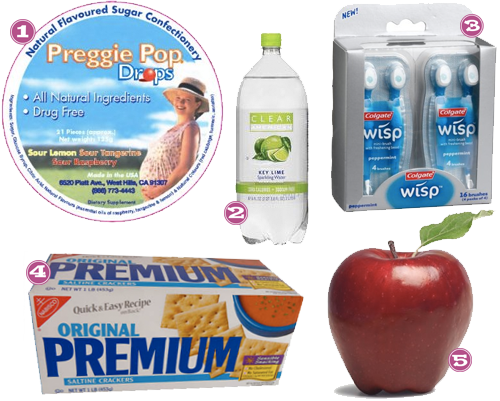

Ello Ladies, specifically you pregnant ladies who can barely hold your head up without barfing in the AM, I’m talkin to YOU! I was NOT one of the lucky ones to experience pregnancy sans morning sickness. Now, I’m sure there are some who have it much worse than I, but I felt like death for a good portion of the last 6 weeks. I figured out a few tricks along the way and this is what kept me from losing my breakfast.. you know, or lunch or dinner.

- Amazon, Preggie Pop Drops – Looks like a cough drop, tastes like a Jolly Rancher and I have no idea why, but kept me from barfing many a time on my morning commute to work or when lunch didn’t make it to the table fast enough or someone walked by wearing rank ass perfume. Miracle drops should really be their name. Don’t walk, run, Pregos!
- Walmart, Clear American Sparkling Water– I know I’m supposed to drink a lot of water for my little bambino. One issue: water sat on my stomach like a brick and made me want to vomit even more. Sparkling water was my happy medium. Bubbles for the tum-tum and light fruit flavor that is delish and refreshing, even on your worst days.
- Amazon, Colgate Wisp– The coolest invention I’ve run across in a long time. Perfect for getting that nasty taste out of your mouth that is about to make you hurl OR for cleaning your self up after the hurling is over. Purse sized and disposable and perfect.
- Saltines- This is a morning sickness staple heard ’round the world, but I just thought I’d reiterate just how helpful it is to stick a few of these crackers in your piehole before you even lift your head off the pillow. Makes getting dressed in the morning much less nauseating.
- Apples- I know this sounds weird, but they are crisp and not too sweet and not too sour. They also will take a nasty taste out of your mouth and put something on your stomach without being to heavy. Apples were and are still at least a twice a day occurrence for me.


Recent Comments